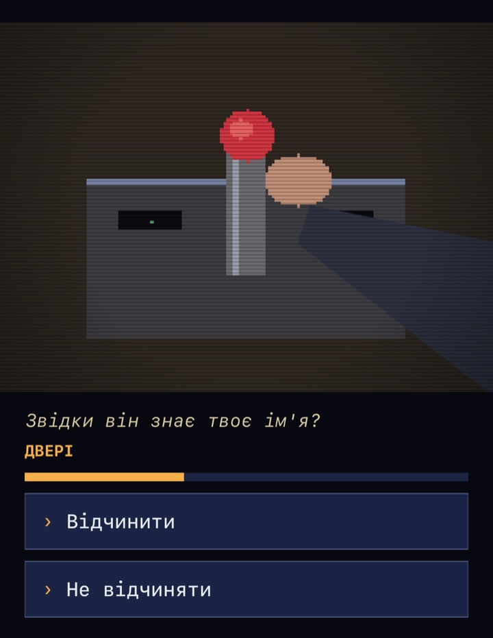
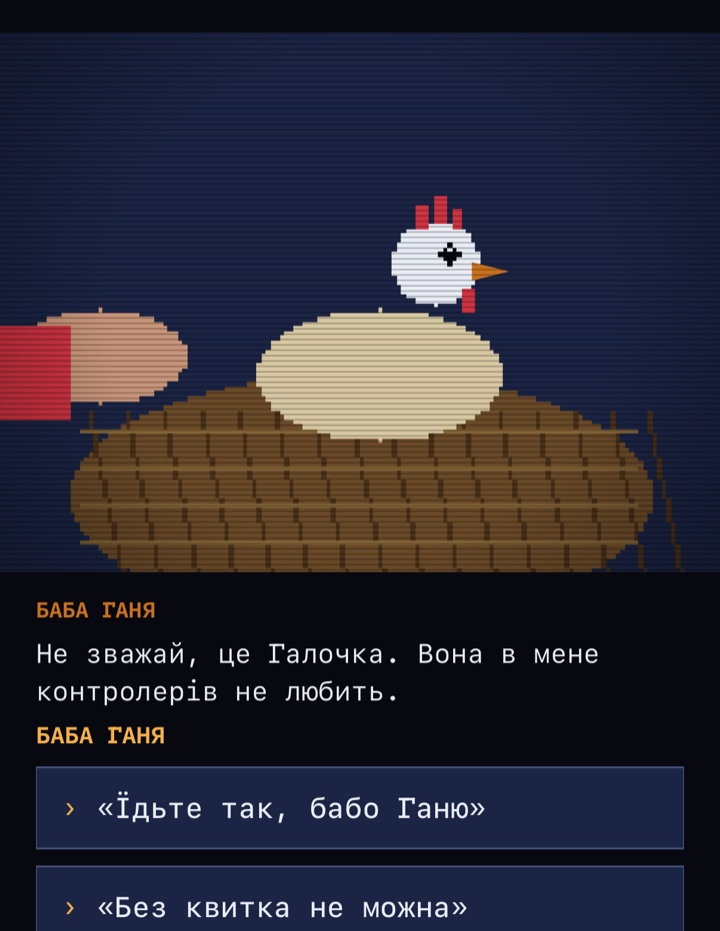
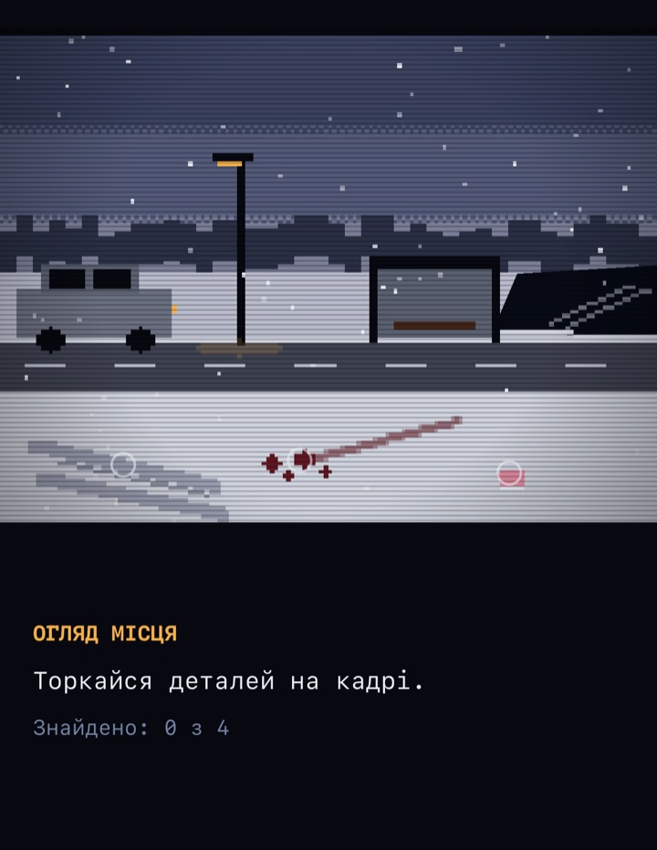
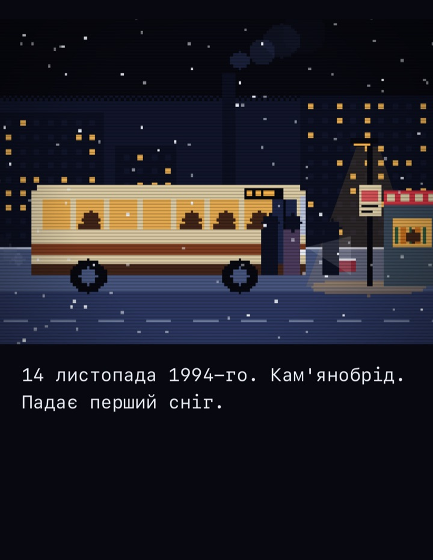
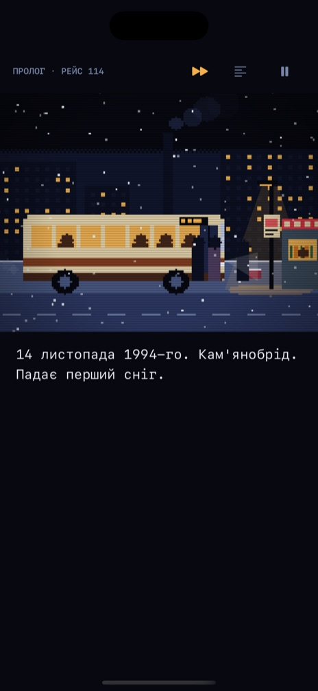
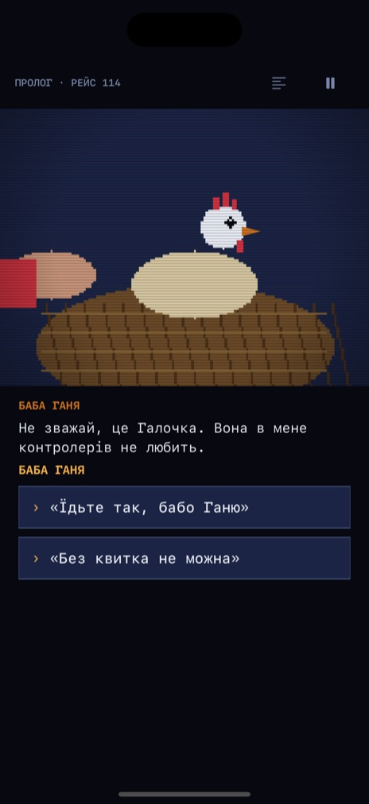
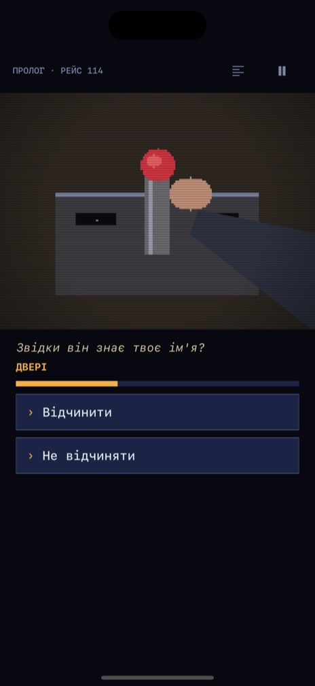
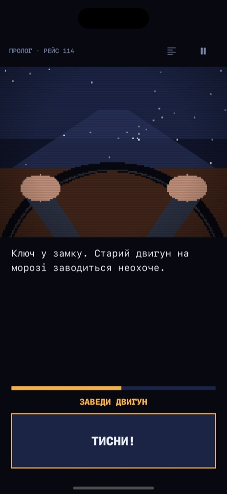
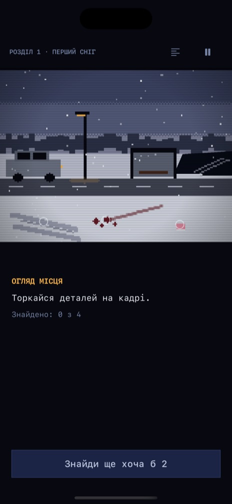
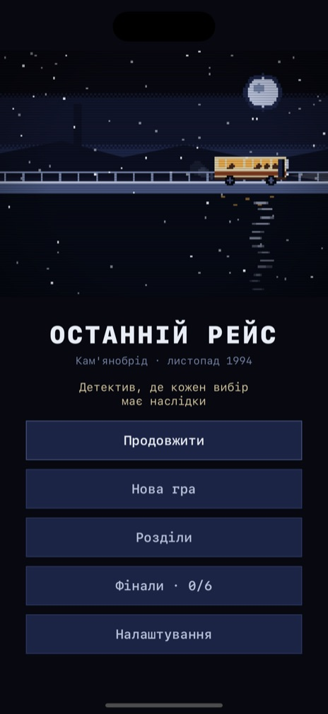

Останній автобус
не доїхав
114-й вийшов о 21:40 у перший сніг. Що сталося тієї ночі — вирішуєш ти.
 Скоро
Скоро
 Скоро
Скоро
Гра
Інтерактивне кіно в пікселях
Вибір на час
Годинник завжди цокає. Не встигнеш — і вирішать за тебе.

Хтось це запам'ятає
Маленька доброта й маленька жорстокість повертаються — інколи через кілька розділів.

Огляд місця
Придивись. Торкайся деталей у кадрі й знайди те, що хтось хотів сховати.

Місто 1994-го
Купони, ларьки, перший сніг і останній автобус о 21:40. Кожен кадр — піксель-арт, намальований саме для цієї гри.

Кадри
Дощ, натрієві ліхтарі й маршрут 114






Питання
Часті питання
Коли вихід?
Скоро — спершу на iPhone, потім на Android. Залиш пошту й обери телефон — напишемо один раз, коли гра на ньому вийде.
Скільки коштує?
Пролог і перший розділ безкоштовні. Решта історії відкривається однією покупкою — без реклами й підписок.
Кам'янобрід — справжнє місто?
Це збірний образ українських містечок. Але кожен, хто жив у 90-х, впізнає в ньому своє місто: купони, ларьки, останній автобус о 21:40.
Це для дітей?
Ні. У грі є насильство, теми смерті й алкоголь. Рекомендовано 16+.
Які мови?
Українська та англійська. Гра говорить мовою твого телефона.
Які дані ви збираєте?
Жодних. Прогрес лишається на телефоні. Деталі — в політиці конфіденційності.
Встигни на перший рейс
«Останній рейс» майже готовий. Обери телефон, залиш пошту — один лист, коли гра вийде.
Скоро
Скоро